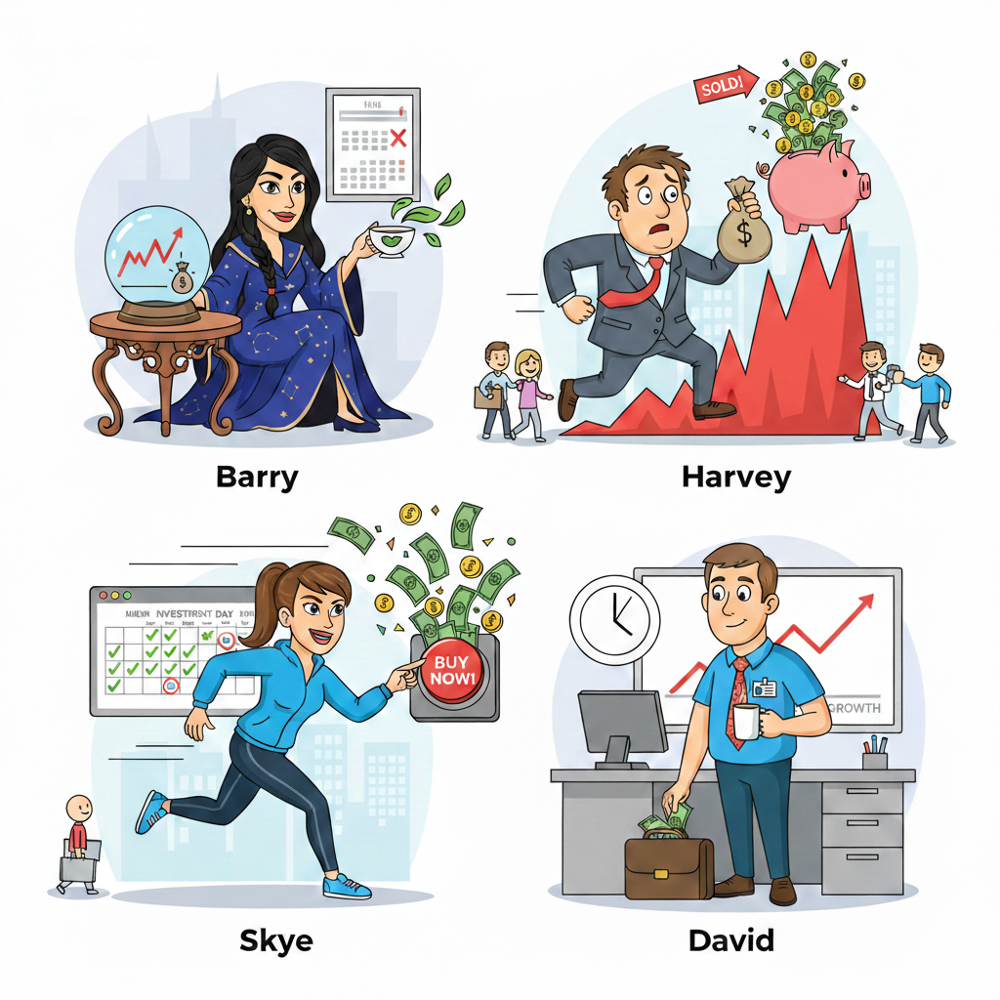
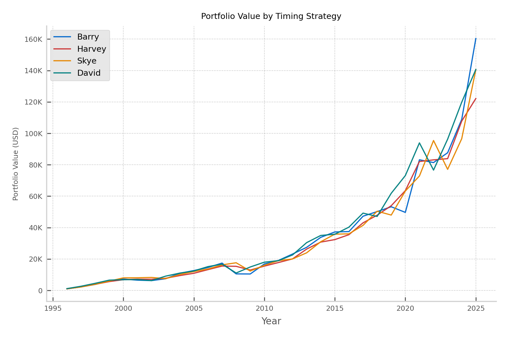
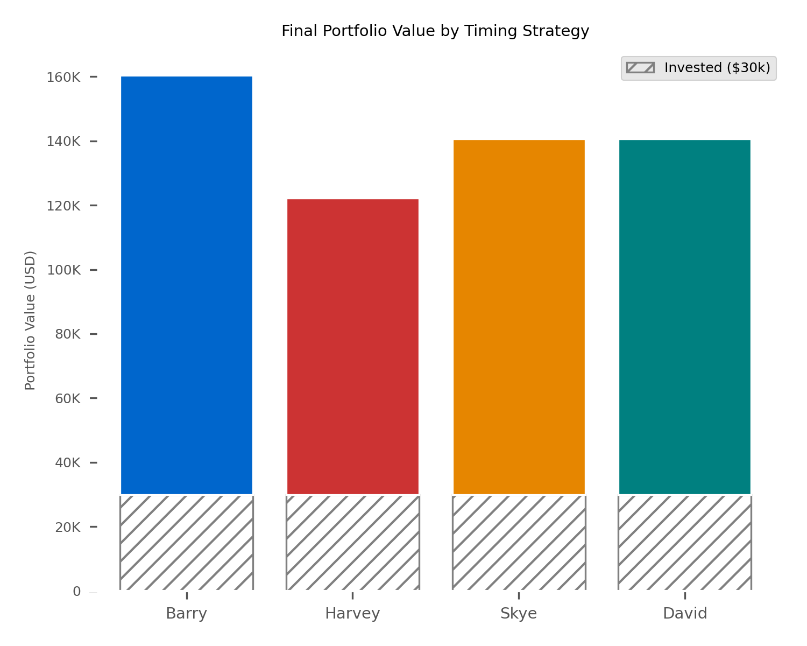

Does Market Timing Matter?
You’ve probably heard “time in the market beats timing the market.” But how much does timing actually matter? I ran a simple backtest: four people each invest $1,000 per year for 30 years in the S&P 500. The only difference is when they buy.
The four characters
Each character invests the same total ($30,000 over 30 years) but with a different timing rule.

Barry — The one who “knows” the bottom. Barry has a crystal ball (or a time machine). Every year she invests her $1,000 on the single day the S&P 500 hits its lowest close. In reality, nobody can do this; we use Barry as the upper bound of “perfect” timing.
Harvey — The one who’s always late. Harvey means well but has historically terrible timing. Every year, he invests on the day the market hits its highest close. This means Harvey bought at the absolute top of the Dot-com bubble (2000), right before the 2008 Financial Crisis, immediately preceding the 2020 Covid crash, and at the 2022 peak.
Skye — The one who can’t wait. As soon as she has the money (the first trading day of each year), she invests the full $1,000. No waiting for a dip.
David — The nine-to-fiver. David gets paid every other week and invests a fixed slice each payday: $1,000 ÷ 26 ≈ $38.46 per paycheck. He never tries to time anything; he just invests when the money lands. He’s the personification of "slow and steady."
Data and assumptions
- Index: S&P 500 (^GSPC) total return proxy.
- Period: 1996 through 2025 (30 full years).
- Amount: $1,000 per year per person.
- No fees, taxes, or inflation are included; the focus is purely on timing.
Portfolio value over time
The line chart shows each character’s portfolio value year by year. Barry (best timing) ends up highest; Harvey (worst timing) ends up lowest—but notice that even Harvey’s line trends up strongly over 30 years. Skye and David sit in the middle and track each other closely: the “eager” investor and the “steady” investor end up in a similar place.

Final portfolio value: invested vs growth
The bar chart below compares where each person lands at the end. Each bar is split into two parts: the gray band at the bottom is the $30,000 they put in; the colored segment on top is the growth from market returns. So the full height of the bar is their total portfolio value.

Conclusion
If you have a long horizon, timing is not make-or-break. Barry is a thought experiment; nobody can consistently buy the annual low. The comparison that actually matters is between people like Skye (invest when you have the money) and David (invest on a schedule). They end up in the same ballpark. So: automate your contributions if you can, invest when you get paid, and don’t stress about picking the “right” day. Time in the market is what shows up in the data.